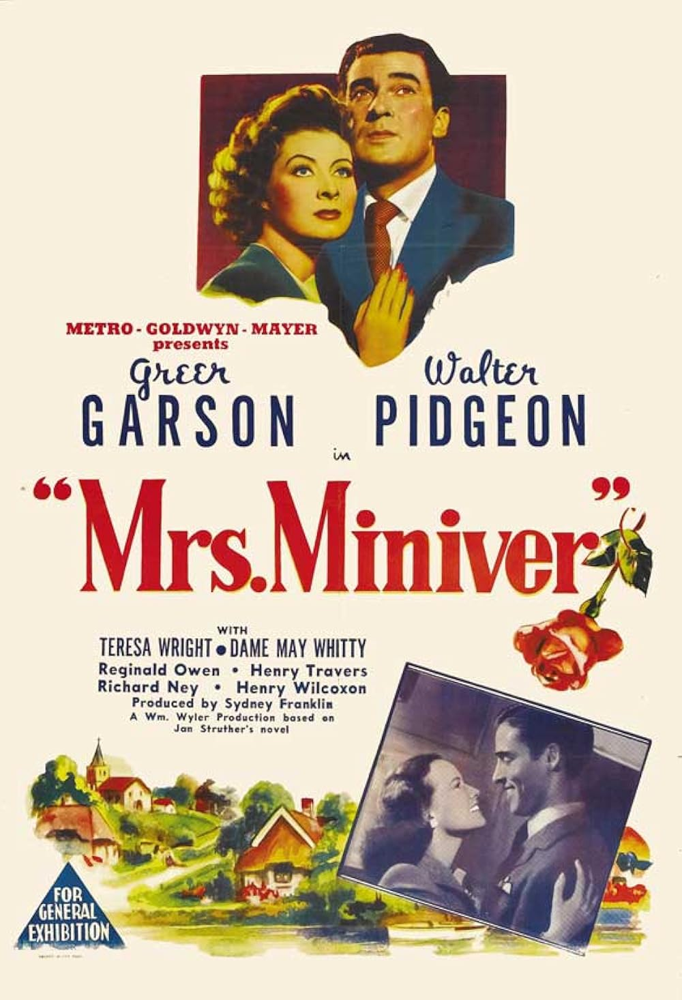

Mrs. Miniver
15th Academy Awards
(Oscars 1943)
12 Nominations, 6 Awards
| Nominations | ||
|---|---|---|
| Category | Nominees | Result |
| Outstanding Motion Picture | Metro-Goldwyn-Mayer | Won |
| Actor | Walter Pidgeon | Nominated |
| Actress | Greer Garson | Won |
| Actor in a Supporting Role | Henry Travers | Nominated |
| Actress in a Supporting Role | Dame May Whitty | Nominated |
| Actress in a Supporting Role | Teresa Wright | Won |
| Directing | William Wyler | Won |
| Writing (Screenplay) | Arthur Wimperis, Claudine West, George Froeschel, and James Hilton | Won |
| Cinematography (Black-and-White) | Joseph Ruttenberg | Won |
| Film Editing | Harold F. Kress | Nominated |
| Special Effects | A. Arnold Gillespie, Douglas Shearer, and Warren Newcombe | Nominated |
| Sound Recording | Douglas Shearer | Nominated |